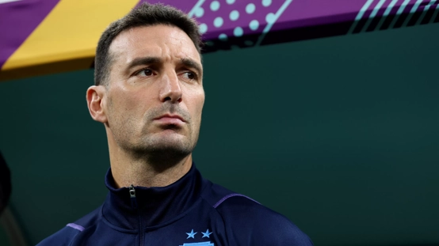
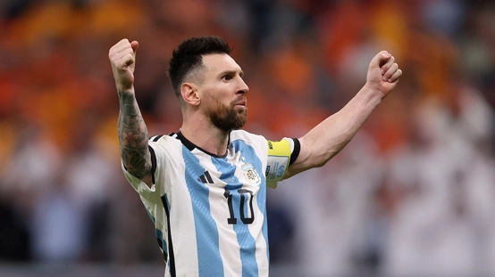
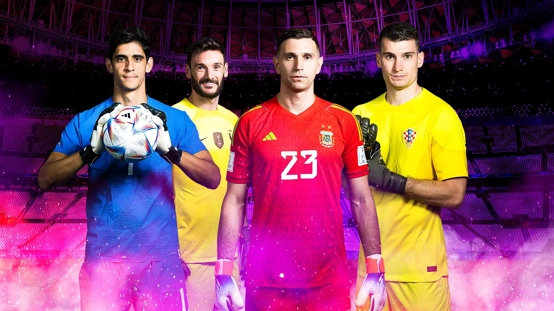
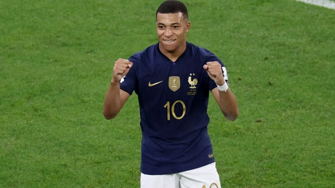
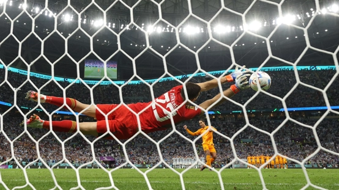
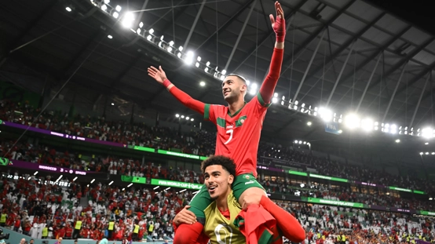
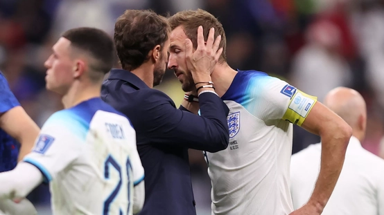

Scaloni, emocionado hasta las lágrimas por los hinchas

Los récords mundiales que Messi posee y persigue

Los inspiradores arqueros que persiguen la historia de los Mundiales

Los máximos goleadores de Catar 2022

LM10, vidas paralelas alrededor de un balón

Livakovic y Dibu Martínez, dos especialistas en penales

Marruecos: lo mejor de Ziyech en la Copa Mundial

Inglaterra se despide con la cabeza alta